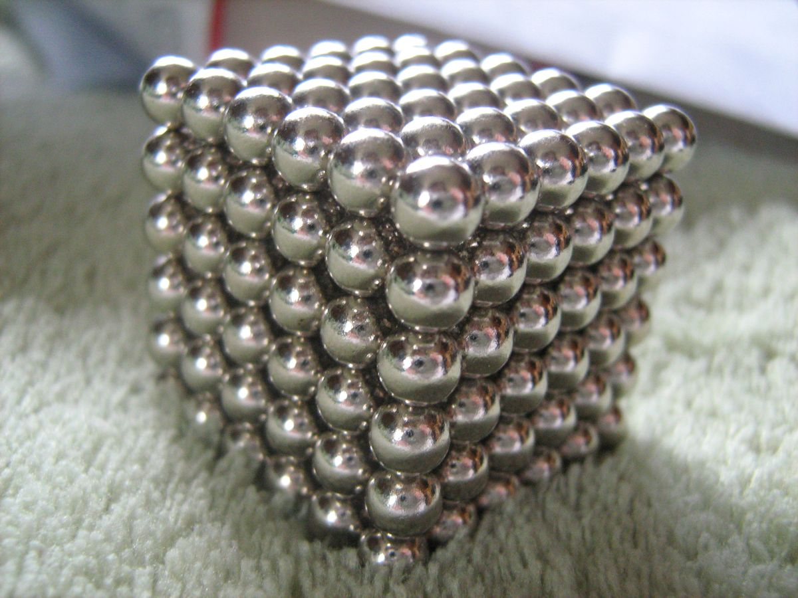
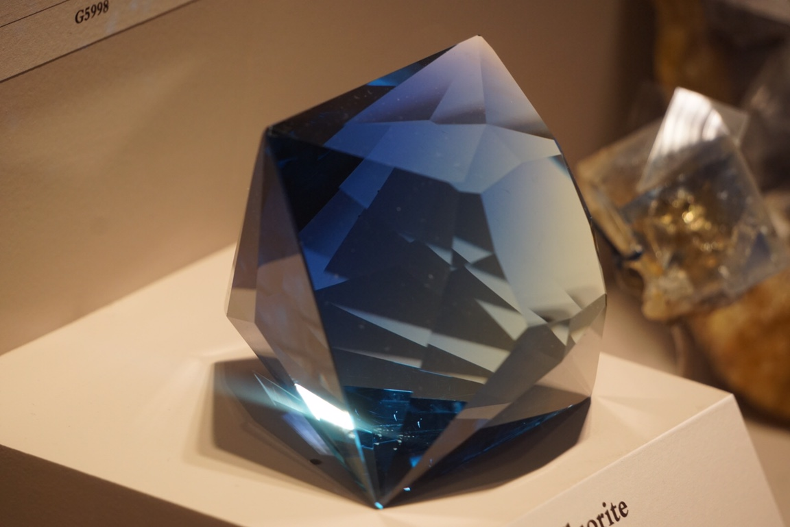
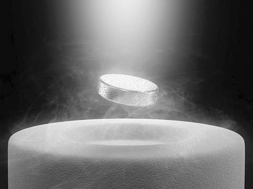
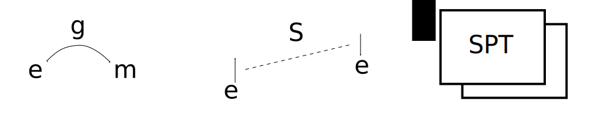
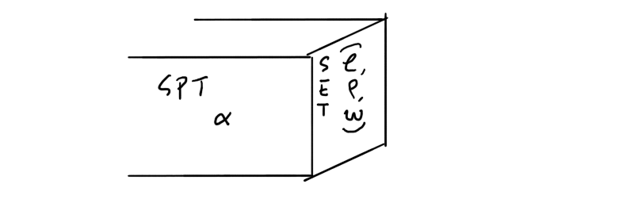
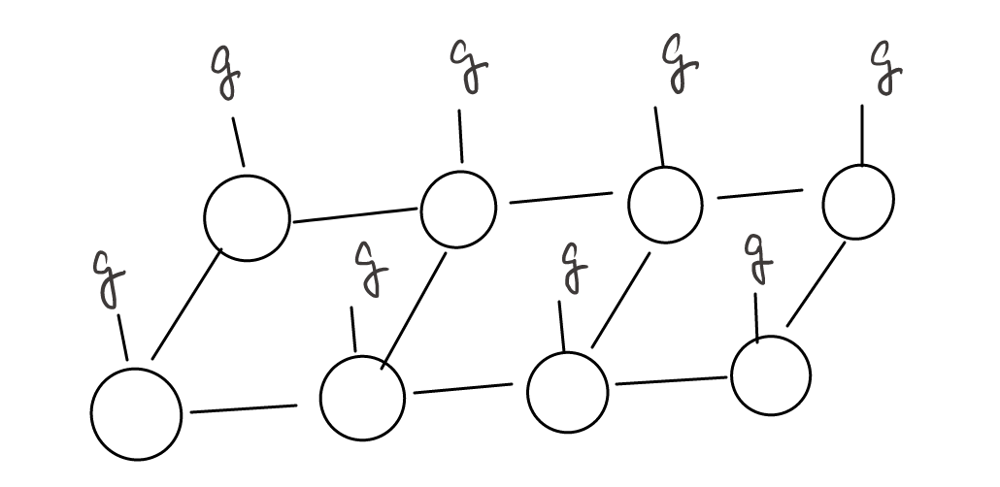

Symmetry-Enriched Topological Phases
戚扬
复旦大学物理系
贵州大学, 2021年2月27日
Slides available at www.spinon.science/set/set-review.html
Outline
- Intrinsic topological order w/o symmetry
- How symmetry enriches topological orders
- Classification theory: anomaly and obstructions
- Recent progresses and challenges
Phases: Landau paradigm and Beyond
- Landau paradigm: phases are classified by symmetry breaking.



- Beyond: topological phases.
No symmetry breaking, but still nontrivial.
Topological orders w/o symmetry
- Invertible topological order (iTO)
- Examples: Kitaev chain, Integer Quantum Hall, etc.
- No fractional excitations.
- No GSD on any manifold.
- Gapless boundary states.
- Intrinsic topological order (ITO)
- Examples: Fractional Quantum Hall, toric code, etc.
- Fractional excitations (anyons).
- GSD on torus and high-genus manifolds.
Intrinsic topological order 101
X G Wen, Nat Sci Rev 3:68 (2016).
- Classifying ITO = Classifying anyons.
- Abelian anyons: e.g. quasiparticle in 1/3 Laughlin state.
\[c^\dagger \Rightarrow a\otimes a\otimes a\]
- Non-Abelian anyons: internal state
$$\sigma\otimes\sigma=I\oplus\psi;\sqrt2\times\sqrt2 = 1+1.$$
- Anyon fusion: $N^{ab}_c$, $d_a$.
Anyon statistics
Self statistics
Multual statistics
Fermionic topological orders
- $f$: the transparent fermion.
- $f\otimes f=I$, $d_f=1$, $\theta_f=-1$.
- Transparent: $M_{a,f}=1$.
Example: $\nu=\frac13$ Laughlin state
- $f$ is the electron
- Quasiparticle $a$: $a\otimes a\otimes a=f$
Chiral central charge
- Some ITOs have chiral edge states (topologically protected).
- Topological number: central charge of the edge CFT $c$.
- $c$ is partially determined by the anyon data.
\[e^{i\frac{2\pi}8c}=\frac1D\sum_{a}d_a^2\theta_a.\]
- Only determined mod 8: still an independent quantum number.
Labeling ITOs
- We may label ITOs by $(S, T, c)$.
- $(S,T,c)$ $\leftrightarrow$ $(N^{ab}_c,\theta_a)$.
- Incomplete: different ITOs may have the same label.
- Needs gauge-dependent data: F- and R-symbols.
- Unitary Modular Tensor Category
Example: (chiral) semion
- Anyons: $I$, $s$.
- Fusion: $s\otimes s=I$.
- Spin: $\theta_s=i$.
- $c=1\mod8$.
Example: FQHE
- Anyons: $I$, $f$, $a$, $a^2$, $fa$, $fa^2$.
- Fusion: $a\otimes a\otimes a=f$.
- Spin: $\theta_a=e^{i\pi/3}$.
- $c=1\mod8$.
Example: toric code
- Anyons: $I$, $e$, $m$, $\psi$.
- Spin: $\theta_e=\theta_m=+1$, $\theta_\psi=-1$.
- $c=0\mod8$ (nonchiral).
Fusion
| $\otimes$ | $e$ | $m$ | $\psi$ |
|---|
| $e$ | $I$ | $\psi$ | $m$ |
|---|
| $m$ | $\psi$ | $I$ | $e$ |
|---|
| $\psi$ | $m$ | $e$ | $I$ |
|---|
S-matrix
| $2S_{ab}$ | $e$ | $m$ | $\psi$ |
|---|
| $e$ | $1$ | $-1$ | $-1$ |
|---|
| $m$ | $-1$ | $1$ | $-1$ |
|---|
| $\psi$ | $-1$ | $-1$ | $1$ |
|---|
Example: (chiral) Ising
- Anyons: $I$, $\psi$, $\sigma$.
- Spin: $\theta_\psi=-1$, $\theta_\sigma=e^{i\pi/8}$.
- $c=\frac12\mod8$ (nonchiral).
Fusion
| $\otimes$ | $\psi$ | $\sigma$ |
|---|
| $\psi$ | $I$ | $\sigma$ |
|---|
| $\sigma$ | $\sigma$ | $I+\psi$ |
|---|
S-matrix
| $2S_{ab}$ | $I$ | $\psi$ | $\sigma$ |
|---|
| $I$ | $1$ | $1$ | $\sqrt2$ |
|---|
| $\psi$ | $1$ | $1$ | $-\sqrt2$ |
|---|
| $\sigma$ | $\sqrt2$ | $-\sqrt2$ | $0$ |
|---|
2. How symmetry enriches topological orders
Symmetry-Enriched Topological (SET) orders
- 1 ITO + Symmetry = Many SETs.
- Three ways symmetry can enrich ITO:
- Symmetry can exchange anyons.
- Symmetry fractionalization: fractional charge/spin.
- An additional SPT layer stacked onto the ITO.

Why are we interested
- Classify different quantum spin liquid states (PSG analysis).
- Guide the construction of mean-field wave functions.
- Compare numerics, theory and experiments
Symmetry action on anyons
- Each UMTC $\mathcal C$ has a topological symmetry group $\mathrm{Aut}_\mathcal{C}$.
- Example: toric code, $\mathrm{Aut}_\mathcal{C}=\mathbb Z_2$.
- Symmetry action: $\rho: G\rightarrow \mathrm{Aut}_\mathcal{C}$.
- Example: toric code + $G=\mathbb Z_2$.
Two possible $\rho$: trivial or $g:e\leftrightarrow m$.
Symmetry fractionalization
Example: $\mathbb Z_2$ spin liquid.
- Physical states must carry an integer spin.
- Physical state must contain pairs of anyons: $e\otimes e=0$.
- $e$ may carry spin-1/2.
General cases:
- Physical states must carry linear rep of $G$.
- Physical state must be $|a,b,\ldots;0\rangle$, s.t. $a\otimes b\otimes \cdots=0+\cdots$
- $a$,$b$,..., may carry projective rep of $G$.
Projective rep and group cohomology
- Linear rep: $f(g)f(h)=f(gh)$.
- Projective rep: $f(g)f(h)=e^{i\omega(g, h)}f(gh)$, $\omega(g, h)\in \mathcal A$.
- Associativity: $f(g)f(h)f(k)$ gives the cocycle equation.
\[\omega(g, h)+\omega(gh, k)=g\cdot\omega(h, k)+\omega(g, hk).\]
- Equivalence of adding a linear rep: coboundary equivalence
\[df(g, h) = f(g)-f(gh)+g\cdot f(h)\simeq0.\]
- Group cohomology: $\omega\in H^2(G, \mathcal A)$.
- $\omega$ labels equivalence classes of projective reps
Symmetry fractionalization as a 2-cocycle
- Consider the simple case: symmetry does not permute anyon types.
- $\forall a\in\mathcal C$, we have $\omega_a\in H^2[G, \mathrm U(1)]$.
- $a\otimes b=c+\cdots$, $\omega_a+\omega_b=\omega_c$.
- $\exists$ Abelian anyon $w(g, h)$, s.t. $\exp[i\omega_a(g, h)] = M_{a, w(g, h)}^\ast.$
- $w\in H^2(G, \mathcal A)$, where $\mathcal A$ is the fusion group of all Abelian anyons.
Example:toric code
$G=\mathbb Z_2^T$: $\omega(T, T)=\pm1$.
| | e1m1 | eTm1 | e1mT | eTmT |
| $e$ | +1 | -1 | +1 | -1 |
| $m$ | +1 | +1 | -1 | -1 |
| $\psi$ | +1 | -1 | -1 | +1 |
| $w$ | $0$ | $m$ | $e$ | $\psi$ |
SPT layer
- Last layer: a Symmetry-Protected Topological (SPT) order.
- Classified by $\alpha\in H^3[G, \mathrm U(1)]$.
- More complicated if nontrivial symmetry fractionalization is present.
- (Putting layers together makes things complicated...)
3. Classification theory: anomaly and obstructions
Putting things together
- Choose $\rho: G\rightarrow\mathrm{Aut}_{\mathcal C}$.
- Solve $dw = O_3[\rho]$.
- $O_3[\rho]\in H^3_\rho(G, \mathcal A)$ is a three-cocycle.
- It is an obstruction class: if nontrivial, then there is no solution.
- When the obstruction is trivial, solutions are $w=w_0 + w'$.
- $w_0$ is a special solution
- $w'\in H^2_\rho(G, \mathcal A)$ is a solution of $dw'=0$.
- We say $H^2_\rho(G, \mathcal A)$ is a "torsor" if $\rho$ is nontrivial.
Putting things together
- Solve $d\alpha = O_4[w]$.
- $O_4[w]\in H^4[G, \mathrm U(1)]$ is a four-cocycle: obstruction class.
- If $O_4[w]$ vanishes, $\alpha$ is classified by a torsor $H^3[G, \mathrm U(1)]$.
Anomalous SET orders
- Interpretation of the obstruction function: the SET order is anomalous.
- Must live on the surface of a 3D topological bulk.
- Example: $\alpha = O_4[w] \in H^4[G, \mathrm U(1)]$ is a 3D SPT state.
- The symmetry fractionalization $w$ is anomalous.
'
Famous example
- Toric code, $G=\mathbb Z_2^T$, $eTmT$ state.
- Must be realized on the surface of a 3D TSC (DIII class).
- In 3D, surface of topological insulators and superconductors can be gapped and symmetric, but must realize anomalous symmetry fractionalization.
- Chong Wang and T Senthil, 2014.
O3 obstruction
- $\alpha = O_3[\rho] \in H^3[G,\mathcal A]$
- Can be realized on the surface of a 3D SET, with symmetry fractionalization of loop excitations, labeled by $\alpha$.
Example: toric code + TRS
- Trivial TRS action.
- $H^2(G, \mathcal A)=\mathbb Z_2\times\mathbb Z_2$: labeled by $w(T, T)\in \mathcal A$.
- e1m1, e1mT, eTm1.
- eTmT is anomalous.
- TRS $e\leftrightarrow m$
- $H^2_\rho(G, \mathcal A)=\mathbb Z_1$: only one solution.
- $\psi$ is $T^2=-1$.
4. Recent progresses and challenges
Onsite unitary symmetries
- Gauge the symmetry: promote global symmetry to local (gauge) symmetry.
- Ex: $-tc_i^\dagger c_j$ $\Rightarrow$ $-te^{ia_{ij}}c_i^\dagger c_j$, $-J\sigma_i\sigma_j$ $\Rightarrow$ $-J\tau_{ij}^z\sigma_i\sigma_j$.
- Reflecting the anomaly: sym w/ local actions can be gauged.

Computing the O3 obstruction
Computing the O4 obstruction
Time-reversal and crystalline symmetries
- TRS: a few modifications to the formulation.
- Symmetry action: TRS $\rightarrow$ antiunitary autoequivalence of $\mathcal C$.
- Antiunitary action in $H^\ast[G, U(1)]$.
- Crystalline symmetries